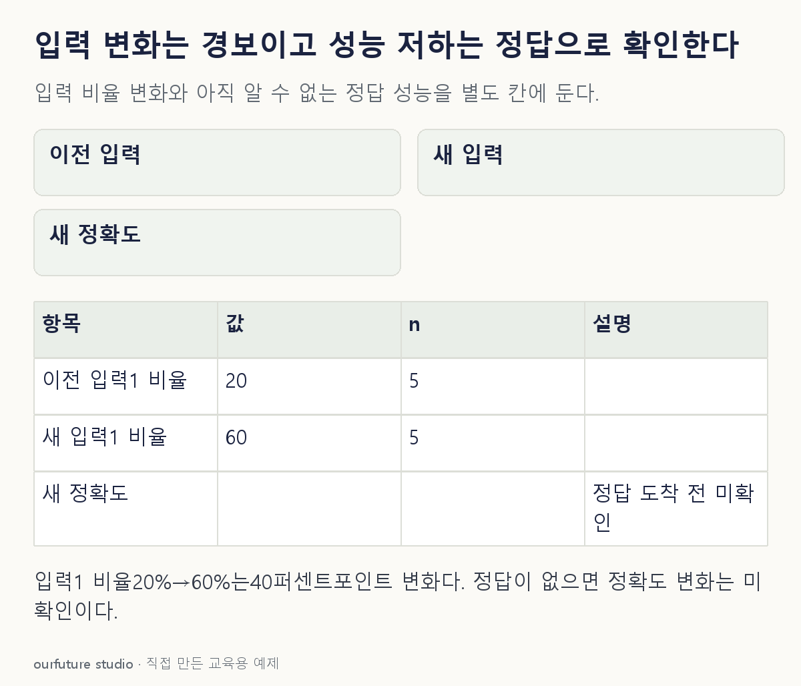

핵심 이론
운영 중에는 정답이 바로 생기지 않을 수 있다. 구매 여부는 일정 기간이 지나야 확정되고, 장비 고장은 이후 점검으로 확인될 수 있다. 이때 누락률, 입력 범위, 범주 비율, 예측 점수와 응답 시간은 즉시 볼 수 있어도 정확도·재현율 같은 정답 의존 지표는 계산할 수 없다. 예측 시점과 식별자를 남기고 나중에 도착한 정답을 연결해야 한다. 정답이 빨리 들어온 일부 사례만 계산했다면 그 표본의 선택 편향과 분모도 함께 밝힌다.
입력 분포의 변화는 학습 때와 다른 환경일 수 있다는 단서다. 계절·고객 구성 변화가 원인일 수도 있고, 단위 오류·수집 누락 같은 파이프라인 문제가 원인일 수도 있다. 그러나 입력 분포가 달라도 입력과 정답의 관계를 모형이 잘 포착하면 성능이 유지될 수 있다. 반대로 관찰한 입력 분포는 비슷해도 정답과의 관계가 바뀌어 성능이 떨어질 수 있다. 분포 변화 검출과 성능 저하 검출은 관찰 대상이 다르다.
정답 전에는 검증해 둔 대리 지표를 사용하더라도 한계를 표시한다. 클릭이나 사용자 거절이 최종 성공을 언제나 정확히 대변하는 것은 아니다. 지표별 기준 기간·관찰 구간·최소 표본과 경보 후 확인 절차를 정하고, 참값이 확보되면 구간별 실제 성능을 비교한다. 특정 집단의 정답 지연과 누락도 확인한다. 입력 경보만 보고 재학습을 확정하기보다 자료 품질과 예측 기록을 먼저 대조하는 편이 원인에 맞는 대응을 돕는다.
작은 예제로 확인하기
자체 이진 입력 자료다. 이전 구간x는[0,0,0,0,1], 새 구간x는[0,0,1,1,1]이다. 새 구간의 정답은 아직 도착하지 않았다.
| 구간 | 입력1의 수 | 표본 수 | 입력1 비율 |
|---|---|---|---|
| 이전 | 1 | 5 | 20% |
| 새 구간 | 3 | 5 | 60% |
입력1비율이40퍼센트포인트 늘었다는 관찰은 가능하다. 정답이 없으므로 새 구간 정확도는 알 수 없다. 표본이 각5개뿐인 자체 설명 예이며, 통계적 분포 변화 검정이나 현장 성능 저하를 확인한 결과는 아니다. AUC가 반드시 연속 실수 점수만 받는 것은 아니다. 정답 클래스와 대응하는 순서 있는 이산 점수에서도 계산할 수 있다. 다만 확률을0·1 판정으로 잘라 넣으면 많은 동점이 생겨 원래 점수의 순위를 잃을 수 있다. 이 사례의 계산 불가 이유는 점수의 연속성보다 정답 자체가 없다는 데 있다.
그림으로 확인하기

직접 고르기
입력값 1의 비율이 이전 5개 중 1개에서 새 5개 중 3개로 바뀌었다. 새 구간의 정답은 아직 없다.
현재 근거로 내릴 수 있는 결론은?
- 1. 정확도가 40퍼센트포인트 하락했다
- 2. 입력 비율은 달라졌지만 성능 저하 여부는 아직 확인할 수 없다
- 3. 재현율은 반드시 0이다
- 4. 정답 없이도 새 구간 AUC를 계산할 수 있다
정답과 오답의 이유 확인하기
정답 2번 — 입력 비율은 달라졌지만 성능 저하 여부는 아직 확인할 수 없다
입력값 1의 비율은 20%에서 60%로 달라졌다. 정확도·재현율·AUC는 실제 정답과 예측을 연결해야 하므로 입력 비율 변화만으로 그 변화를 확정할 수 없다.
- 1번: 입력 비율 차이를 정확도 차이로 바꾸었다. 정답이 없으므로 정확도 자체를 계산하지 못했다.
- 3번: 실제 양성과 그중 맞춘 수를 모른다. 입력 1을 정답 양성이나 오답으로 대신 셀 수 없다.
- 4번: AUC에는 실제 정답 클래스와 그 관측의 예측 점수가 필요하다. 점수는 이산적일 수도 있지만 입력 분포만으로 정답과의 순위를 구할 수는 없다.
조건 하나 바꾸어 풀기
이후 새 5개의 정답이 [0,0,1,1,1]로 확인되고, 저장된 예측도 [0,0,1,1,1]이었다. 이 5개의 정확도는?
풀이: 5개중 5개를 맞혀 100%다.
이 자체 반례는 입력 분포가 달라도 성능이 나빠졌다고 단정할 수 없음을 보여 준다. 5개에서의 정확도가 이후 모집단의 완벽한 성능을 보장하는 것은 아니다.
다시 떠올릴 단서
입력 경보와 정답 기반 성능을 나눈다.
근거와 적용 조건
- Google MLCC Monitoring pipelines — Check for training-serving skew의 schema·feature skew. 확인일 2026-10-30.
- Google Productionization — Logging, monitoring and alerting의 정답 지연·대리 지표. 확인일 2026-10-30.
- scikit-learn roc_auc_score — y_true·y_score: 정답과 예측 점수의 대응. 자체 이산0/1 점수 사례도 Python으로 별도 검산. 확인일 2026-10-30.
상황·수치·보기·조건 변경은 자체 교육 예제다. 민간 복원 문항의 공식 정답이나 실제 성능·학습 효과를 뜻하지 않는다.
읽은 내용을 적용해 보기
고정 입력 표본과 명시한 늦은 정답의 자체 계산이다. 통계적 드리프트 검정·모집단 성능·재학습 필요성을 확정하지 않는다.